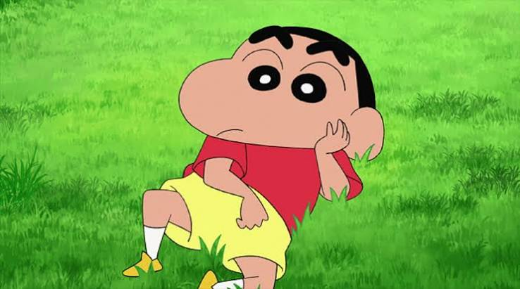

SHINCHAN SHINCHAN PYARA PYARA
THE LEGEND

BIOGRAPHY
Shin-chan (Shinnosuke Nohara) is a mischievous, five-year-old Japanese
kindergartener created by mangaka Yoshito Usui in 1990. Known for his
brutally honest, humorous antics, Shin-chan
lives in Kasukabe, Japan, with his family and is famous for his
love of chocolates and the superhero Action Mask
ACHIEVEMENTS
1997
Shin-chan has been adapted into an anime series, which has gained international popularity.2000
The character has appeared in numerous films and video games.2005
Shin-chan's unique humor and personality have made him a beloved figure in Japanese pop culture.
RESOURCES
LEARN ABOUT SHINCHAN
THANK YOU FOR VISITING!